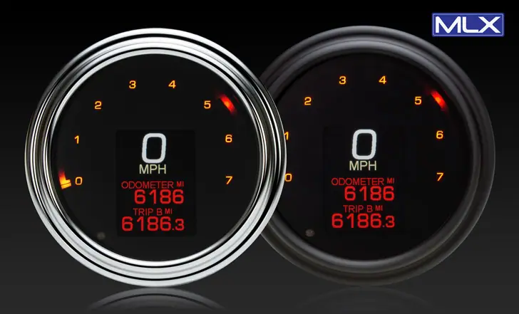

MLX-2000 Series

Replace the tank-mounted speedometer on a Road King, Softail or Dyna with a 4-1/2 to 5 inch Fat Bob dash. The MLX-2000 series fits it.
Choose a black or chrome bezel, then set 31 colors for each part of the display, or use one of 12 themes. It dims at night and switches to high contrast in direct sun. The speedometer reads to 250 mph and calibrates for custom gearing. You also get a wrap-around tach, a gear indicator for 4 to 7 speeds and a voltage readout. Bluetooth works with the Android and Apple app.
Versions fit 2003 and older, 2004-11, and 2011-24 bikes. Oil pressure and temp senders are sold separately. It's made in the USA with a two year warranty. It ships at 0 miles, and the installer can set the odometer during the first 100 miles.
- - Air Suspension Pressure (single or dual readings)
- - MBM-19 - Includes 1 sender. Additional sender SEN-1901 sold seperate.
- - Boost
- - MBM-09 - Sender included.
- - GPS-Powered Compass
- - MBM-17
- - Have a Police model or bike without air temp? Add the Ambient Air Temperature sender SEN-1701 (sold separately) to the MBM-17
- - MBM-17
Pictures
Manuals
App
Your browser must support iframes to purchase this product Your browser must support iframes to purchase this product Your browser must support iframes to purchase this product Your browser must support iframes to purchase this product Your browser must support iframes to purchase this product Your browser must support iframes to purchase this product
Related products


Also on dakotadigital.com.